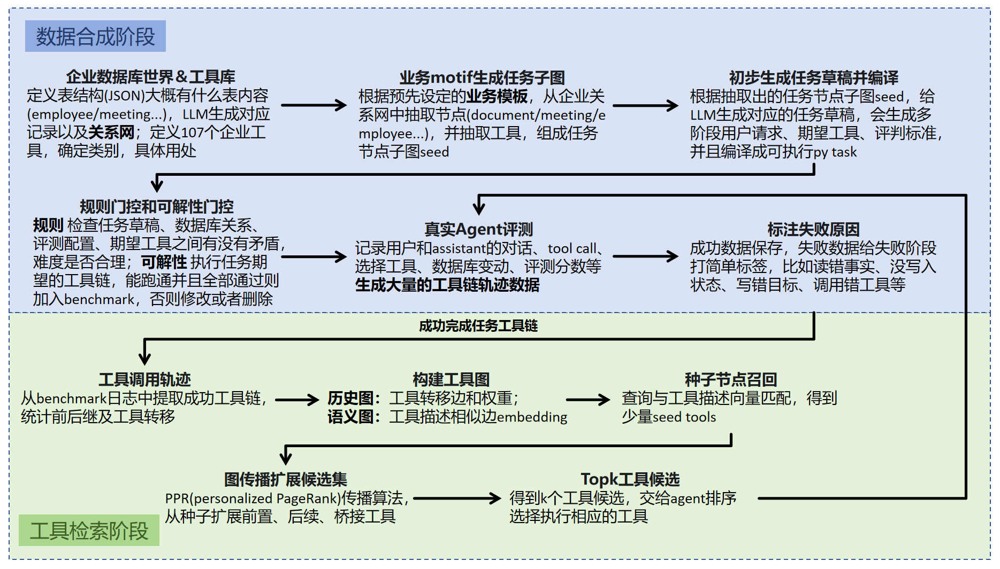
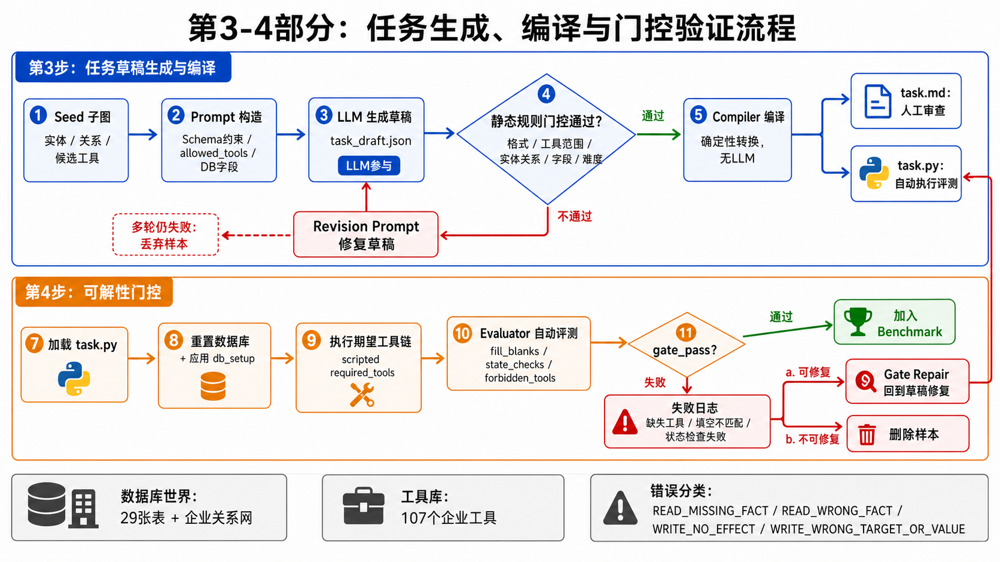
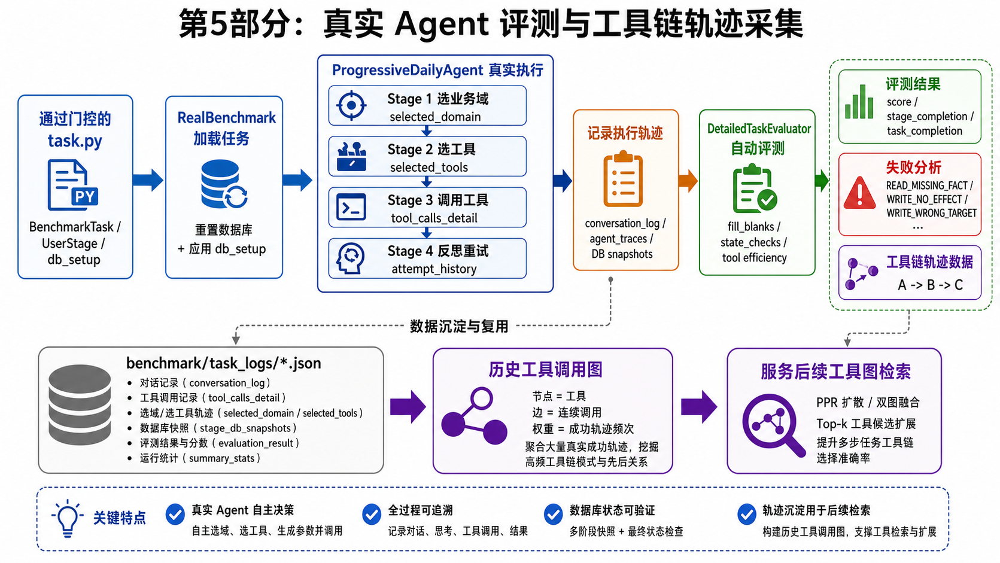
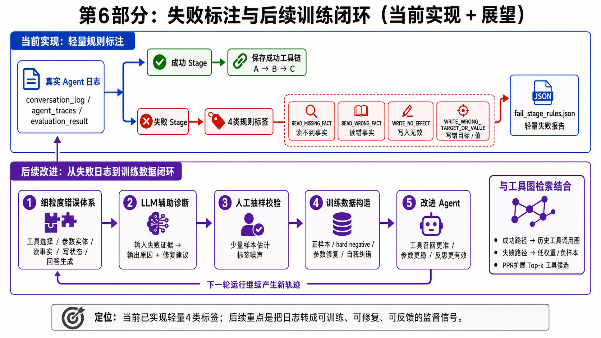
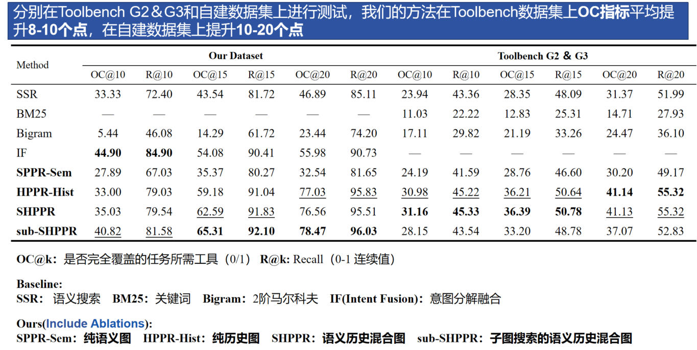
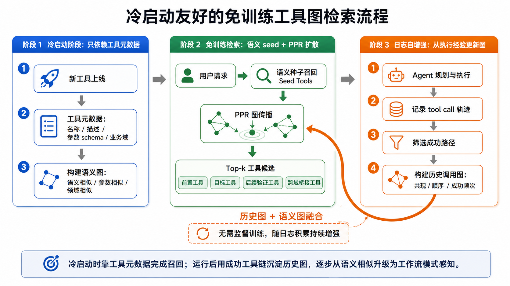

EntBench-Agent：企业工作流任务合成与工具图检索系统
项目整体总览

1. 企业数据库世界 \& 工具库
这一部分主要介绍 EntBench-Agent 中企业模拟环境的构建方式。首先，系统会定义一套 JSON 格式的企业数据库表结构，覆盖组织/用户、HR、文档、会议、项目、日程 等典型业务域。
组织域包含 Department、User、Employee； 文档域包含 Document、DocumentVersion、DocumentPermission、DocumentShare、DocumentDownload、PermissionRequest； 会议域包含 MeetingRoom、RoomBooking、Meeting、MeetingAttendee、MeetingMinutes 等； 项目域包含 Project、ProjectMember、Task； 日程域包含 Schedule、Event、Todo、Reminder。 这些表共同构成一个可被工具访问和修改的企业数据库世界。
在数据生成时，系统不是完全随机地凭空造记录，而是先通过模板数据库确定基础表结构和初始实体，再通过规则化的业务场景包批量扩展数据。
核心思想是：每个业务场景包对应一类真实企业工作流，按照业务逻辑自动生成跨表记录，并建立合理的实体关系 。
例如 document_collab_pack 会先选择一个 uploader 创建文档，再自动赋予 uploader owner 权限，生成 2-4 个文档版本，选择若干 receiver 创建文档分享记录，同时创建对应的文档权限；部分 receiver 还会产生下载记录，其他用户可能进一步发起权限申请。这样生成出来的数据天然包含“用户上传文档 -\> 文档有版本 -\> 文档被分享 -\> 被分享人有权限 -\> 有人下载 -\> 有人申请权限”的链式关系，更贴近真实企业工作流，也方便后续构造多步任务。 meeting_coordination_pack 会生成会议、参会人、会议室预订、会议纪要和会议分享；project_delivery_pack 会生成项目、成员、任务、待办、提醒和相关文档；cross_domain_pack 会把项目、文档权限请求、会议、待办、提醒连接起来；HR 场景包则覆盖请假审批和入职任务。 最终，系统会对生成的数据进行质量校验，包括外键关系是否存在、时间顺序是否合理、项目/会议人数分布是否正常、是否有足够的可查询和可操作样本等。通过这种方式，数据库中的主要节点，如用户、文档、项目、会议等，会和 metadata 一起构成一张企业关系网络，用于后续任务 seed 抽取和任务生成。
同时，系统定义了 107 个 企业工具，覆盖 system、HR、document、permission、meeting、project、schedule 等类别 。每个工具都对应真实的数据库读写能力，例如查询用户、搜索文档、审批权限请求、创建会议、更新任务、创建提醒等。工具库和数据库世界是一一配套的：数据库提供可操作对象，工具提供对这些对象的查询和修改接口，二者共同构成企业 Agent benchmark 的模拟沙盒环境。
业务域 数量 工具名 覆盖能力 系统 2 get_current_time, query_users时间理解、相对日期解析、用户查询与用户 ID 解析 HR 18 get_employee, query_employees, get_manager, list_direct_reports, get_department, list_department_members, create_leave_request, get_leave_request, list_leave_requests, list_employee_leaves, approve_leave_request, reject_leave_request, check_leave_balance, get_onboarding_plan, list_onboarding_tasks, get_onboarding_task, update_onboarding_task_status, create_onboarding_reminder员工/部门查询、上下级关系、请假申请与审批、假期余额、入职计划/任务/提醒 文档 21 create_document, get_document, update_document, delete_document, query_documents, list_documents_by_owner, create_document_version, list_document_versions, get_document_version, delete_document_version, compare_document_versions, restore_document_version, grant_document_permission, revoke_document_permission, list_document_permissions, check_document_permission, create_document_share, list_received_shares, download_document, list_document_downloads, get_download_detail文档 CRUD、搜索、版本管理、权限管理、分享、下载与下载历史 权限 5 request_document_permission, list_permission_requests, approve_permission_request, reject_permission_request, get_user_permission_summary文档权限申请、申请列表查询、审批/拒绝、用户权限汇总 会议 27 list_rooms, book_room, list_bookings, update_booking, cancel_booking, check_room_availability, release_room, create_meeting, get_meeting, list_meetings, update_meeting_information, cancel_meeting, add_meeting_attendee, remove_meeting_attendee, list_meeting_attendees, update_attendee_status, create_meeting_minutes, get_meeting_minutes, share_meeting_minutes, export_meeting_minutes, update_meeting_minutes, grant_meeting_permission, revoke_meeting_permission, list_meeting_permissions, check_meeting_permission, share_meeting, list_received_meeting_shares会议室查询/预订/释放、会议创建/更新/取消、参会人管理、会议纪要、会议权限与分享 项目 16 create_project, get_project, list_projects, update_project, assign_project_member, list_project_members, list_user_projects, create_task, get_task, list_project_tasks, list_user_tasks, update_task, update_task_status, update_task_completion, get_task_progress, get_project_progress项目创建/查询/更新、成员管理、任务创建/查询/更新、任务进度与项目进度统计 日程 18 create_event, get_event, list_events, list_user_events, update_event, delete_event, create_todo, get_todo, list_todos, list_user_todos, update_todo, complete_todo, create_reminder, get_reminder, list_reminders, list_user_reminders, update_reminder, delete_reminder日程事件、待办事项、提醒的创建、查询、更新、完成和删除
2. 业务 motif 生成任务子图
这一部分主要介绍如何从企业关系网中抽取任务 seed。系统会基于第一步构建好的企业实体关系图，根据预先定义的业务 motif，从图中抽取一组相关节点和关系边，例如用户、文档、会议、项目、任务、权限申请等，并同时确定该任务可使用的候选工具。最终得到的 seed 不是完整任务，而是一个结构化的任务骨架，包含任务相关实体、实体之间的关系证据、初始状态、目标状态、候选工具和难度约束。
2.1 任务难度分级
难度 任务特点 Level 1 单节点任务，例如查询一个文档、一个用户或一个任务 Level 2 双节点或简单关系任务，例如用户收到某个文档分享、某个任务属于某个项目 Level 3 涉及状态变化的任务，例如审批权限、更新任务状态、修改会议或日程 Level 4 跨业务域协调任务，通常包含多轮上下文继承和多次工具调用，例如文档权限 + 项目任务 + 会议协调
2.2 seed 子图抽取流程
先从企业关系图中抽取用户节点。不同难度会要求不同数量和关系复杂度的用户，例如 Level 2 通常需要两个相关用户作为任务主体。 根据抽到的用户及其关系边，继续扩展相关实体，例如该用户上传的文档、收到的分享、负责的项目、参与的会议或待办事项。 将抽取到的局部关系子图与预设业务 motif 进行匹配。若满足业务模板要求，就返回该任务 seed；如果不满足，则重新抽取用户和关系。 seed 中会保留真实实体 ID、实体属性、关系证据、初始状态和目标状态，作为后续 LLM 生成任务草稿的约束输入。 2.3 候选工具确定流程
候选工具不是简单地把全部 107 个工具都交给 LLM，而是根据 seed 子图和业务 motif 进行打分筛选。系统会综合五类信号：
信号 含义 motif preferred tools 每个业务 motif 预设的高优先级工具，例如权限审批 motif 会偏好 list_permission_requests 和 approve_permission_request domain hints 根据 seed 涉及的业务域选择工具，例如 seed 涉及 document/permission，就优先考虑文档和权限工具 entity hints 根据 seed 中出现的实体类型选择工具，例如出现 Document、DocumentShare、PermissionRequest，就匹配文档查询、分享查询、权限申请工具 relation hints 根据关系边选择工具，例如 pending_permission_request 关系会提示需要查询和审批权限申请 target_state keyword hints 根据目标状态中的关键词选择工具，例如 approve/update/revoke/create 等词会提示需要写操作工具
系统会根据综合分数对工具排序，并按照任务难度保留不同数量的候选工具。低难度任务只保留少量必要工具，高难度任务会允许更多跨域工具，但仍然会过滤掉危险或无关工具，例如不应该出现的删除、取消、撤销类工具。
2.4 为什么要先确定 seed 子图和候选工具
不能让 LLM 直接在所有关系和所有工具中自由生成任务，主要有三个原因：
可解性不可控。LLM 容易编出数据库中不存在的实体关系，例如某人拥有某文档、某会议和某项目相关，但真实数据库里并不存在这条关系，最终任务无法执行。 工具链不可控。全量工具空间过大，LLM 可能设计出当前工具系统不支持的操作，或者漏掉必要前置工具，导致任务虽然自然，但无法被自动评测。 难度和分布不可控。benchmark 需要可复现地控制任务难度、业务域覆盖和多跳关系结构。如果完全由 LLM 自由生成，样本容易集中在简单常见任务上，或者生成一批风格相似但结构不稳定的任务。 因此，seed 子图负责保证实体关系真实、任务目标可落地；候选工具负责限制工具空间、提高工具链可执行性；LLM 只在这个受约束的空间内负责把结构化 seed 改写成自然、多阶段的用户任务。
3. 初步生成任务草稿并编译
这一部分主要介绍：系统如何基于第二步得到的任务 seed，让 LLM 生成结构化任务草稿，并进一步编译成 benchmark 可执行的 .py 任务文件和人工可读的 .md 任务说明。
整体流程如下：
任务 seed 子图
-> 构造 LLM Prompt
-> LLM 生成 task_draft.json
-> 静态格式/规则检查
-> compiler 确定性编译
-> 输出 task.md + task.py这里需要注意：LLM 只参与“生成任务草稿 JSON”这一步；JSON 编译成 .md 和 .py 是纯规则代码完成的，不是让 LLM 直接写 Python 文件。
3.1 输入：任务 seed 子图
seed 来自第二步的 motif 采样，里面包含真实实体、关系证据、初始状态、目标状态和候选工具。LLM 后续只能基于 seed 中已有的实体和工具生成任务，不能随便编造数据库中不存在的关系。
{
"seed_id": "SEED_L3_PERMISSION_001",
"difficulty": 3,
"motif_id": "L3_PERMISSION_APPROVAL",
"domains": ["document", "permission"],
"actors": [
{
"user_id": "user017",
"name": "Alice",
"role": "document_owner"
},
{
"user_id": "user031",
"name": "Bob",
"role": "requester"
}
],
"entities": {
"permission_request": {
"request_id": "req000123",
"document_id": "doc000456",
"requester_id": "user031",
"owner_id": "user017",
"permission_requested": "edit",
"status": "pending"
},
"document": {
"document_id": "doc000456",
"title": "Partner Ops Launch Checklist",
"uploader_id": "user017"
}
},
"relation_evidence": [
{
"relation": "pending_permission_request",
"request_id": "req000123",
"document_id": "doc000456"
},
{
"relation": "request_owner",
"request_id": "req000123",
"owner_id": "user017"
}
],
"initial_state": [
"Permission request req000123 is pending."
],
"target_state": [
"Approve request req000123 and grant edit permission to user031 on doc000456."
],
"allowed_tools": [
"list_permission_requests",
"get_document",
"approve_permission_request",
"list_document_permissions"
],
"forbidden_tools": [
"delete_document",
"reject_permission_request"
]
}3.2 Prompt：让 LLM 生成结构化任务草稿
Prompt 的目标不是让 LLM 自由发挥，而是让它把 seed 改写成自然、多阶段、可评测的用户任务。Prompt 中会明确约束：只能使用 seed 中的实体，只能使用 allowed tools，不能使用 forbidden tools，必须输出 JSON，并且读任务要有 fill_blanks，写任务要有 state_checks。
You are a benchmark task designer for an enterprise multi-tool agent.
Your job is to convert the given task seed into a realistic, solvable,
strictly checkable multi-stage benchmark task.
Hard constraints:
1. Use only entities and relations from the seed.
2. Use only tools from allowed_tools.
3. Never use tools from forbidden_tools.
4. The number of stages must match the difficulty constraints.
5. For read stages, provide fill_blanks with exact expected answers.
6. For write stages, provide state_change and state_checks.
7. state_checks must use real database tables and fields.
8. The final task must be executable by the current tool system.
9. Output JSON only.
Seed Summary:
{seed_json}
Allowed Tool Specs:
{allowed_tool_specs}
Return JSON with this schema:
{
"task_meta": {
"task_name": "string",
"difficulty": 3,
"description": "string",
"tags": ["string"]
},
"stages": [
{
"stage_id": 1,
"role": "string",
"user_id": "string",
"user_says": "string",
"stage_goal": "string",
"depends_on_stages": [],
"required_tools": ["tool_name"],
"optional_tools": ["tool_name"],
"forbidden_tools": ["tool_name"],
"fill_blanks": [
{
"key": "string",
"question": "string",
"expected": "string",
"check_type": "exact",
"required": true
}
],
"state_checks": [
{
"table": "string",
"condition": {},
"expected_count": 1
}
],
"state_change": "none | description"
}
],
"evaluation_outline": {
"cross_stage_rules": ["string"],
"final_state_checks": [],
"notes": "string"
}
}3.3 LLM 输出：task_draft.json 示例
LLM 输出的是结构化任务草稿，而不是最终 benchmark 文件。它定义了多阶段用户请求、每阶段期望工具、填空答案、状态检查和跨阶段规则。
{
"task_meta": {
"task_name": "Approve document edit request",
"difficulty": 3,
"description": "The document owner needs to find and approve a pending edit permission request, then verify that the requester has edit access.",
"tags": ["document", "permission", "approval"]
},
"stages": [
{
"stage_id": 1,
"role": "document_owner",
"user_id": "user017",
"user_says": "Find the pending edit request for the Partner Ops launch checklist.",
"stage_goal": "Locate the pending permission request and identify the related document and requester.",
"depends_on_stages": [],
"required_tools": [
"list_permission_requests",
"get_document"
],
"optional_tools": [],
"forbidden_tools": [
"approve_permission_request",
"reject_permission_request",
"delete_document"
],
"fill_blanks": [
{
"key": "request_id",
"question": "What is the pending permission request ID?",
"expected": "req000123",
"check_type": "exact",
"required": true
},
{
"key": "document_id",
"question": "Which document is the request for?",
"expected": "doc000456",
"check_type": "exact",
"required": true
},
{
"key": "requester_id",
"question": "Who requested the permission?",
"expected": "user031",
"check_type": "exact",
"required": true
}
],
"state_checks": [],
"state_change": "none"
},
{
"stage_id": 2,
"role": "document_owner",
"user_id": "user017",
"user_says": "Approve that request and verify the requester can edit the document.",
"stage_goal": "Approve the same request found in Stage 1 and verify edit permission.",
"depends_on_stages": [1],
"required_tools": [
"approve_permission_request",
"list_document_permissions"
],
"optional_tools": [],
"forbidden_tools": [
"reject_permission_request",
"delete_document"
],
"fill_blanks": [],
"state_checks": [
{
"table": "PermissionRequest",
"condition": {
"request_id": "req000123",
"status": "approved"
},
"expected_count": 1
},
{
"table": "DocumentPermission",
"condition": {
"document_id": "doc000456",
"entity_type": "user",
"entity_id": "user031",
"permission": "edit"
},
"expected_count": 1
}
],
"state_change": "Approve permission request req000123 and grant edit permission to user031 on document doc000456."
}
],
"evaluation_outline": {
"cross_stage_rules": [
"Stage 2 must approve the same request_id found in Stage 1.",
"The approved permission must belong to the same document_id and requester_id identified in Stage 1."
],
"final_state_checks": [
{
"table": "PermissionRequest",
"condition": {
"request_id": "req000123",
"status": "approved"
},
"expected_count": 1
}
],
"notes": "The task requires carrying request_id, document_id, and requester_id across stages."
}
}3.4 Compiler：JSON 草稿编译成 md 和 py
compiler 的输入是 task_draft.json 和 seed.json，输出是两份文件：
.md：给人看的任务说明，方便人工检查任务语义；.py：给 benchmark runner 和 evaluator 用的可执行任务定义。这一步没有 LLM 参与，是确定性的规则转换。
from pathlib import Path
from benchmark.generators import draft_compiler
py_path, md_path = draft_compiler.compile_draft(
draft_file=Path("benchmark/data/task_drafts/L3_201.draft.json"),
draft_index=0,
seed_file=Path("benchmark/data/task_seeds/L3_201.seed.json"),
seed_index=0,
task_id="L3_201",
py_out="",
md_out=""
)
print(py_path)
print(md_path)编译逻辑可以概括为：
读取 task_draft.json
读取 seed.json
补全空 expected 字段
根据 seed 构造 db_setup patches
校验 stage / fill_blanks / state_checks 结构
生成 cross-stage checks
_render_md() 生成任务说明
_render_py() 生成可执行任务文件
写入 benchmark/tasks/levelX 和 benchmark/tasks/taskmd/levelX3.5 编译输出一：task.md 示例
.md 文件是人类可读版本，主要用于人工审查任务是否自然、合理、可评测。
# L3_201 Task Spec
## 1. Task Meta
- Task Name: Approve document edit request
- Difficulty: L3
- Domains: document, permission
- Description: The document owner needs to find and approve a pending edit permission request, then verify edit access.
## 2. Stage-by-Stage Expectation
### Stage 1
User says:
"Find the pending edit request for the Partner Ops launch checklist."
Goal:
Locate the pending permission request and identify the related document and requester.
Required Tools:
- list_permission_requests
- get_document
Fill Blanks:
- request_id = req000123
- document_id = doc000456
- requester_id = user031
State Change:
- none
### Stage 2
User says:
"Approve that request and verify the requester can edit the document."
Goal:
Approve the same request found in Stage 1 and verify edit permission.
Required Tools:
- approve_permission_request
- list_document_permissions
State Checks:
- PermissionRequest where request_id = req000123 and status = approved
- DocumentPermission where document_id = doc000456, entity_id = user031, permission = edit
## 3. Cross-Stage Rules
- Stage 2 must approve the same request_id found in Stage 1.
- The approved permission must belong to the same document_id and requester_id identified in Stage 1.
## 4. Database Setup Patches
- Ensure PermissionRequest req000123 exists and is pending before the task starts.3.6 编译输出二：task.py 示例
.py 文件是机器可执行版本。它定义了任务内容、数据库初始化补丁、每阶段评测要求和跨阶段一致性检查。
from benchmark.schemas import (
UserStage,
DatabaseSetup,
DatabasePatch,
StageExpectation,
ToolCallExpectation,
ParameterCheck,
StateExpectation,
CrossStageCheck,
)
from benchmark.tasks.base import TaskDefinition, EvaluationDefinition, create_task
def get_task_definition() -> TaskDefinition:
return TaskDefinition(
task_id="L3_201",
name="Approve document edit request",
difficulty=3,
description=(
"The document owner needs to find and approve a pending edit "
"permission request, then verify edit access."
),
tags=["document", "permission", "approval"],
stages=[
UserStage(
role="document_owner",
user_id="user017",
user_says="Find the pending edit request for the Partner Ops launch checklist.",
description="Locate the pending request and identify document/requester.",
),
UserStage(
role="document_owner",
user_id="user017",
user_says="Approve that request and verify the requester can edit the document.",
description="Approve the same request and verify edit permission.",
),
],
db_setup=get_db_setup(),
real_entities={
"seed_id": "SEED_L3_PERMISSION_001",
"request_id": "req000123",
"document_id": "doc000456",
"requester_id": "user031",
"owner_id": "user017",
},
)
def get_db_setup() -> DatabaseSetup:
return DatabaseSetup(
description="Task-specific setup delta.",
patches=[
DatabasePatch(
table="PermissionRequest",
operation="upsert",
entity_id="req000123",
data={
"request_id": "req000123",
"document_id": "doc000456",
"requester_id": "user031",
"owner_id": "user017",
"permission_requested": "edit",
"status": "pending",
"reason": "Need to update the launch checklist.",
},
)
],
)
def get_evaluation_definition() -> EvaluationDefinition:
return EvaluationDefinition(
success_keywords=[],
failure_keywords=[],
stage_expectations=[
StageExpectation(
stage_id=1,
description="Find the pending request and identify key IDs.",
expected_tools=[
ToolCallExpectation(
tool_name="list_permission_requests",
required=True,
parameters=[
ParameterCheck(
param_name="status",
check_type="exact",
expected_value="pending",
)
],
),
ToolCallExpectation(
tool_name="get_document",
required=True,
parameters=[
ParameterCheck(
param_name="document_id",
check_type="exact",
expected_value="doc000456",
)
],
),
],
forbidden_tools=[
"approve_permission_request",
"reject_permission_request",
"delete_document",
],
fill_blanks=[
{
"key": "request_id",
"question": "What is the pending permission request ID?",
"expected": "req000123",
"check_type": "exact",
"required": True,
},
{
"key": "document_id",
"question": "Which document is the request for?",
"expected": "doc000456",
"check_type": "exact",
"required": True,
},
{
"key": "requester_id",
"question": "Who requested the permission?",
"expected": "user031",
"check_type": "exact",
"required": True,
},
],
state_changes=[],
),
StageExpectation(
stage_id=2,
description="Approve the request and verify edit permission.",
expected_tools=[
ToolCallExpectation(
tool_name="approve_permission_request",
required=True,
parameters=[
ParameterCheck(
param_name="request_id",
check_type="exact",
expected_value="req000123",
)
],
),
ToolCallExpectation(
tool_name="list_document_permissions",
required=True,
parameters=[
ParameterCheck(
param_name="document_id",
check_type="exact",
expected_value="doc000456",
)
],
),
],
forbidden_tools=[
"reject_permission_request",
"delete_document",
],
fill_blanks=[],
state_changes=[
StateExpectation(
table="PermissionRequest",
condition={
"request_id": "req000123",
"status": "approved",
},
expected_count=1,
exact_match=True,
),
StateExpectation(
table="DocumentPermission",
condition={
"document_id": "doc000456",
"entity_type": "user",
"entity_id": "user031",
"permission": "edit",
},
expected_count=1,
exact_match=True,
),
],
),
],
cross_stage_checks=[
CrossStageCheck(
check_type="same_request_id",
stages=[1, 2],
description="Stage 2 must approve the same request found in Stage 1.",
)
],
final_state_expectations=[],
)
def get_task():
return create_task(get_task_definition(), get_evaluation_definition())第三步的核心作用是把“结构化 seed”变成“可执行 benchmark 任务”。LLM 负责把 seed 改写成自然的多阶段任务草稿，compiler 负责把草稿确定性转换为 .md 和 .py。其中 .md 用于人工审查任务语义，.py 用于自动执行和评测。这样既保留了 LLM 生成自然任务的能力，又通过 seed、工具约束和 compiler 保证任务可复现、可执行、可评测。
4. 规则门控与可解性门控
这一部分主要解决任务生成后的质量控制问题。由于任务草稿由 LLM 生成，可能出现实体关系矛盾、工具链不可执行、评测字段不可回答、数据库状态检查错误等问题。因此系统在任务进入 benchmark 前，会经过两层门控：第一层是静态规则门控，检查任务“写得是否合理”；第二层是动态可解性门控，检查任务“是否真的能被当前工具系统跑通”。
整体流程如下：
LLM 生成 task_draft.json
-> 规则门控：静态检查草稿是否合法
-> compiler 编译成 task.md / task.py
-> 可解性门控：动态执行期望工具链
-> evaluator 检查查询答案和数据库状态
-> 通过：加入 benchmark
-> 失败：修复草稿 / 重新编译 / 删除样本4.1 规则门控：检查任务草稿是否合理
规则门控主要发生在 task_draft.json 编译成 .md / .py 之前。它不执行工具，而是静态检查 LLM 生成的任务草稿是否符合 schema、工具约束、数据库约束和难度约束。
规则门控检查内容
检查项 具体含义 JSON 格式检查 检查 task_meta、stages、required_tools、fill_blanks、state_checks 等字段是否存在，类型是否正确 工具范围检查 每个阶段使用的工具必须来自 seed 的 allowed_tools，不能调用 forbidden_tools 数据库字段检查 state_checks 中的表名和字段必须真实存在，不能生成不存在的字段，例如 permission_level实体关系检查 检查 request_id、document_id、user_id 等实体是否和 seed 子图中的真实关系一致 评测可回答性检查 fill_blanks 中的答案必须能从期望工具输出中获得，不能设计工具无法返回的评测字段难度合理性检查 检查 stage 数量、角色数量、业务域数量、是否包含状态变化等是否符合 L1-L4 难度设定 多阶段一致性检查 后续阶段必须继承前面找到的同一对象，避免“前面查 A，后面改 B”
对应代码主要在：
benchmark/generators/llm_task_generator.py
- _validate_output_shape()
- _normalize_task_draft()
- _build_revision_messages()
benchmark/generators/draft_compiler.py
- _validate_new_style_stages()
- _collect_cross_stage_check()
- _build_final_state_expectations()
benchmark/generators/run_full_pipeline.py
- _static_sanity_check_task()规则门控代码逻辑示例
def validate_task_draft(task_draft, seed, table_field_index):
issues = []
# 1. 检查 stages 结构
stages = task_draft.get("stages", [])
if not isinstance(stages, list) or not stages:
issues.append("stages must be a non-empty list")
# 2. 检查工具是否在 allowed_tools 中
allowed_tools = set(seed.get("allowed_tools", []))
forbidden_tools = set(seed.get("forbidden_tools", []))
for stage in stages:
used_tools = set(stage.get("required_tools", [])) | set(stage.get("optional_tools", []))
for tool in used_tools:
if tool not in allowed_tools:
issues.append(f"tool {tool} is not in allowed_tools")
if tool in forbidden_tools:
issues.append(f"tool {tool} is forbidden")
# 3. 检查 state_checks 的表和字段是否真实存在
for stage in stages:
for check in stage.get("state_checks", []):
table = check.get("table")
condition = check.get("condition", {})
if table not in table_field_index:
issues.append(f"unknown table: {table}")
continue
valid_fields = table_field_index[table]
for field in condition.keys():
if field not in valid_fields:
issues.append(f"unknown field {field} for table {table}")
# 4. 检查读任务是否有可评测 fill_blanks
for stage in stages:
has_read_eval = bool(stage.get("fill_blanks"))
has_write_eval = bool(stage.get("state_checks"))
if not has_read_eval and not has_write_eval:
issues.append("stage has no checkable outcome")
return len(issues) == 0, issues如果规则门控失败，系统会把错误反馈给 LLM 的 revision prompt，让 LLM 修复草稿；多轮修复仍失败，则丢弃该样本。
4.2 编译后的补充检查
当草稿通过静态规则后，compiler 会把它转换成 .md 和 .py。编译时也会做一些轻量补充检查和补全，例如：
根据 seed 和数据库补全空的 expected 值； 根据 seed 构造 DatabasePatch，保证任务初始状态稳定； 将 fill_blanks 转成 StageExpectation； 将 state_checks 转成 StateExpectation； 自动收集跨阶段一致性检查； 将真实实体保存到 real_entities，方便后续评测和可解性验证。 对应流程可以简化为：
def compile_from_objects(task_draft, seed, task_id):
db = load_database(seed)
backfill_empty_expected_from_seed_db(task_draft, seed, db)
patches = build_db_patches(seed, task_draft, db)
validate_new_style_stages(task_draft["stages"])
cross_stage_checks = collect_cross_stage_check(seed, task_draft["stages"])
final_state_expectations = build_final_state_expectations(task_draft)
md_text = render_md(task_id, task_draft, seed, patches, cross_stage_checks)
py_text = render_py(task_id, task_draft, seed, patches, cross_stage_checks)
write_text(md_path, md_text)
write_text(py_path, py_text)4.3 可解性门控：检查任务是否真的能跑通
可解性门控发生在 .py 任务文件生成之后。它会加载编译后的 task 文件，重置数据库，应用任务的 db_setup，然后按照每个阶段的 required_tools 执行一条确定性的工具链，最后用 evaluator 检查是否全部通过。
这里不是让真实 Agent 自由执行，而是用 scripted path 跑期望工具链。这样可以验证“任务本身是否可解”，避免把任务设计错误误判为 Agent 能力不足。
可解性门控流程
加载 task.py
-> 重置数据库 unified_database.json
-> 应用 db_setup patches
-> 读取 seed_facts / real_entities
-> 注册 107 个工具
-> 按 stage 执行 required_tools
-> 记录工具调用结果和每阶段数据库快照
-> DetailedTaskEvaluator 自动评测
-> gate_pass = true / false对应代码主要在：
benchmark/generators/solvability_gate.py
- run_solvability_gate()
- _load_task_from_py()
- _apply_db_setup()
- _tool_registry()
- _execute_required_tools_for_stage()
- _patch_fill_blank_to_scripted()
benchmark/evaluators.py
- DetailedTaskEvaluator.evaluate()
- DetailedTaskEvaluator._evaluate_stage()可解性门控代码逻辑示例
def run_solvability_gate(task_file):
# 1. 重置数据库
reset_database()
# 2. 加载编译后的任务 py
task = load_task_from_py(task_file)
# 3. 应用任务自己的数据库 setup
apply_db_setup(task)
# 4. 注册所有可用工具
registry = load_all_tools()
traces = []
stage_db_snapshots = {}
# 5. 按每个 stage 的 required_tools 执行确定性工具链
for stage_id, stage in enumerate(task.stages, start=1):
stage_expectation = task.evaluation.stage_expectations[stage_id - 1]
tool_calls_detail, agent_response = execute_required_tools_for_stage(
stage=stage,
stage_expectation=stage_expectation,
registry=registry,
)
traces.append({
"stage_id": stage_id,
"user_query": stage.user_says,
"tool_calls_detail": tool_calls_detail,
"agent_response": agent_response,
})
# 保存每个阶段结束后的数据库状态
stage_db_snapshots[stage_id] = read_database()
# 6. 评测工具调用、填空答案、数据库状态变化
evaluator = DetailedTaskEvaluator(
initial_db=initial_db,
final_db=final_db,
agent_traces=traces,
stage_db_snapshots=stage_db_snapshots,
enable_fill_blank_llm=False,
)
result = evaluator.evaluate(task, conversation_log=[])
return {
"gate_pass": result["overall_success"],
"score": result["score"],
"evaluation_result": result,
}4.4 Evaluator 检查内容
可解性门控最后会调用 DetailedTaskEvaluator，检查每个阶段是否满足任务定义中的评测条件。
检查项 说明 required tools 该阶段必须调用的工具是否都被执行 forbidden tools 是否误调用了禁止工具 fill blanks 查询类任务是否能从工具结果中抽取出正确答案 state changes 写操作后数据库是否出现预期状态变化 no tool call 对于不应调用工具的阶段，检查是否真的没有工具调用 stage pass 每个阶段的 outcome 是否通过 task pass 所有阶段都通过，任务才算通过
核心逻辑可以简化为：
def evaluate_stage(expectation, stage_trace, state_db):
called_tools = extract_called_tools(stage_trace)
# 1. required tool 检查
missing = required_tools - called_tools
if missing:
process_pass = False
# 2. forbidden tool 检查
forbidden_called = forbidden_tools & called_tools
if forbidden_called:
process_pass = False
# 3. 写任务：检查数据库状态
state_results = []
for state_expectation in expectation.state_changes:
state_results.append(check_state_expectation(state_expectation, state_db))
# 4. 读任务：检查 fill_blanks
fill_blank_result = evaluate_fill_blanks(
expectation.fill_blanks,
stage_trace["agent_response"]
)
# 5. outcome-first：以结果是否达成为主要通过标准
if expectation.state_changes and expectation.fill_blanks:
passed = all_state_passed and fill_blank_passed
elif expectation.state_changes:
passed = all_state_passed
elif expectation.fill_blanks:
passed = fill_blank_passed
else:
passed = process_pass
return passed4.5 失败处理：修复或删除
如果可解性门控失败，系统会生成详细日志，记录：
哪个 stage 失败； 缺了哪些 required tools； 哪些 fill_blanks 没有抽到或答案不匹配； 哪些 state_checks 没有满足； 哪个工具调用失败，参数是什么，返回了什么结果。 失败后有两种处理方式：
如果开启 gate repair，系统会把失败日志反馈给 LLM，让它修复 task_draft.json，然后重新编译和重新验证。 如果多轮修复仍失败，或者没有开启修复，就删除该任务样本，避免不可解任务进入 benchmark。 对应逻辑可以简化为：
for round_idx in range(max_repair_rounds):
py_path, md_path = compile_from_objects(current_draft, seed, task_id)
gate_result = run_solvability_gate(py_path)
if gate_result["gate_pass"]:
keep_task(py_path, md_path)
break
issues = extract_gate_failure_issues_from_log(gate_result["log_path"])
current_draft = repair_draft_by_llm(seed, current_draft, issues)
else:
drop_task(py_path, md_path)4.6 错误分类
在真实 Agent 执行 benchmark 后，系统还会对失败阶段做规则化错误分类，方便分析模型失败原因。当前主要分成四类：
错误类型 含义 示例 READ_MISSING_FACT 查询任务没有找到 required fill_blank 的答案 需要回答 document_id，但实际输出为空 READ_WRONG_FACT 查询任务找到了答案，但答案和标准答案不一致 把 doc000456 错答成 doc000789 WRITE_NO_EFFECT 写操作没有产生任何预期数据库变化 调用了审批工具，但数据库里没有 approved 记录 WRITE_WRONG_TARGET_OR_VALUE 写操作产生了变化，但目标或值不对 审批了错误的 request，或权限从 edit 变成 view
对应代码在：
benchmark/fail_stage_rule_labeler.py
- READ_MISSING_FACT
- READ_WRONG_FACT
- WRITE_NO_EFFECT
- WRITE_WRONG_TARGET_OR_VALUE
- build_rule_report()错误分类代码逻辑可以简化为：
def label_failed_stage(stage_result):
stage_type = stage_result["stage_type"]
if stage_type in {"read", "read_write"}:
missing_fields, wrong_fields = collect_failed_required_fields(stage_result)
if missing_fields:
return "READ_MISSING_FACT"
if wrong_fields:
return "READ_WRONG_FACT"
if stage_type in {"write", "read_write"}:
failed_state_checks = collect_failed_state_checks(stage_result)
if failed_state_checks:
all_zero = all(check["actual_count"] == 0 for check in failed_state_checks)
if all_zero:
return "WRITE_NO_EFFECT"
else:
return "WRITE_WRONG_TARGET_OR_VALUE"
return None第四步的核心作用是保证进入 benchmark 的任务既合理又可解。
规则门控负责静态检查任务草稿，避免 LLM 生成不存在的字段、错误实体关系、不可回答评测项或不合理难度；可解性门控负责动态执行任务工具链，验证当前数据库和工具系统确实能完成任务。
只有通过静态规则检查和动态执行验证的任务，才会被保留下来作为最终 benchmark 样本。

5. 真实 Agent 评测与工具链轨迹采集
这一部分主要介绍：通过前面门控验证的任务，如何交给真实 Agent 执行，并在执行过程中记录用户对话、工具选择、工具调用、数据库状态变化、评测分数和失败类型。真实 Agent 评测不仅用于衡量当前 Agent 能否完成任务，也会沉淀大量真实工具调用轨迹，为后续构建历史工具调用图和工具检索方法提供数据。
整体流程如下：
通过 gate 的 task.py
-> RealBenchmark 加载任务
-> 重置数据库
-> 应用 db_setup
-> 按 UserStage 多轮执行真实 Agent
-> Agent 自主选择 domain / tools / tool args
-> 记录 conversation_log + agent_traces
-> Evaluator 自动评测
-> 保存 task log
-> 抽取工具链轨迹数据对应代码主要在：
benchmark/real_benchmark.py
- RealBenchmark
- run_task()
- _save_log()
progressive_daily_agent.py
- ProgressiveDailyAgent
- _stage1_domain()
- _stage2_tools()
- _stage3_execute()
- _reflect()
- invoke()
benchmark/evaluators.py
- DetailedTaskEvaluator.evaluate()
- _evaluate_stage()
- _mine_solvable_paths()
- _calculate_metrics()
benchmark/generators/run_full_pipeline.py
- _run_single_pipeline_item()
benchmark/fail_stage_rule_labeler.py
- build_rule_report()5.1 RealBenchmark：真实任务执行入口
真实评测由 RealBenchmark.run_task() 驱动。它会加载一个已经编译好的 BenchmarkTask，按照任务中的 UserStage 逐轮模拟用户请求。每一轮都会切换到指定用户身份，让真实 Agent 根据自然语言请求自行选择工具并执行。
核心流程可以简化为：
class RealBenchmark:
WORK_DB_PATH = "database/unified_database.json"
def run_task(self, task):
# 1. 清空 Agent 上下文，保证不同 task 之间隔离
self.agent.conversation_history = []
self.agent.current_user_id = None
# 2. 重置数据库
if self.reset_db_between_tasks:
self._restore_database()
# 3. 应用任务专属 db_setup
if self.reset_db_between_tasks:
self._apply_db_setup(task)
# 4. 保存初始数据库快照，用于后续评测
task_initial_snapshot = read_json("database/unified_database.json")
conversation_log = []
agent_traces = []
stage_db_snapshots = {}
# 5. 逐 stage 执行真实 Agent
for i, stage in enumerate(task.stages):
self.agent.login(stage.user_id)
conversation_log.append({
"role": "user",
"user_id": stage.user_id,
"content": stage.user_says,
})
result = self.agent.invoke(stage.user_says)
agent_traces.append({
"stage_id": i + 1,
"user_query": stage.user_says,
"user_id": stage.user_id,
"agent_response": result["final_message"],
"selected_domain": result["selected_domain"],
"selected_tools": result["selected_tools"],
"tool_calls_detail": result["tool_calls_detail"],
"stage1_thought": result["stage1_thought"],
"stage2_thought": result["stage2_thought"],
"attempt_count": result["attempt_count"],
"tried_domains": result["tried_domains"],
"token_usage": result["token_usage"],
"timing": result["timing"],
})
conversation_log.append({
"role": "assistant",
"acting_as_user": stage.user_id,
"content": result["final_message"],
})
# 每个 stage 后保存数据库快照，避免后续写操作污染前面阶段的检查
stage_db_snapshots[i + 1] = read_json("database/unified_database.json")
# 6. 读取最终数据库状态
final_db = read_json("database/unified_database.json")
# 7. 用 DetailedTaskEvaluator 自动评测
evaluator = DetailedTaskEvaluator(
initial_db=task_initial_snapshot,
final_db=final_db,
agent_traces=agent_traces,
stage_db_snapshots=stage_db_snapshots,
task=task,
)
eval_result = evaluator.evaluate(task, conversation_log)
# 8. 保存完整运行日志
log_path = self._save_log(task, conversation_log, eval_result, agent_traces)
return TaskResult(
task_id=task.task_id,
success=eval_result["overall_success"],
score=eval_result["score"],
conversation_log=conversation_log,
agent_traces=agent_traces,
final_state_check=eval_result,
)这一步和前面的 solvability gate 不同：
阶段 执行方式 目的 可解性门控 scripted required_tools 验证任务本身是否可解 真实 Agent 评测 Agent 自主选域、选工具、填参数 测试 Agent 在真实工具环境中的执行能力
5.2 ProgressiveDailyAgent：真实 Agent 的分阶段执行
真实 Agent 使用 ProgressiveDailyAgent，采用渐进式工具暴露策略。它不会一开始看到全部 107 个工具，而是先判断业务域，再选择该域下的候选工具，最后只基于选中的工具进行参数生成和调用。
整体结构如下：
用户请求 user_says
-> Stage 1: Domain Selection
-> Stage 2: Tool Selection
-> Stage 3: Tool Execution
-> Stage 4: Reflection / Retry
-> final_message + traceStage 1：选择业务域
Agent 先根据用户请求判断最相关的业务域，例如 document、permission、meeting、project、schedule、hr 等。
def _stage1_domain(self, state):
user_query = state["messages"][-1].content
prompt = f"""
Determine which domain is most relevant to the user request.
Available domains:
- system
- document
- permission
- meeting
- project
- schedule
- hr
User request: {user_query}
Output:
[Thought Process]
...
[Domain]
document
"""
response = self.llm.invoke([HumanMessage(content=prompt)])
thought = response.content
domain = self._extract_domain_from_stage1_thought(thought)
return {
"selected_domain": domain,
"stage1_thought": thought,
"tried_domains": [...],
}日志中会记录：
{
"selected_domain": "permission",
"stage1_thought": "..."
}Stage 2：选择工具
选定业务域后，Agent 只看到该域下的工具，以及系统工具 get_current_time、query_users。它需要从这些工具中选出本轮可能需要的工具。
def _stage2_tools(self, state):
user_query = state["messages"][-1].content
domain = state.get("selected_domain", "document")
allowed_tools = self._get_allowed_tools_for_domain(domain)
prompt = STAGE2_TOOL_SELECTION_PROMPT.format(
user_query=user_query,
domain=domain,
tool_list=format_tool_list(allowed_tools),
)
response = self.llm.invoke([HumanMessage(content=prompt)])
thought = response.content
selected = self._extract_tools_from_stage2_thought(thought, allowed_tools)
return {
"selected_tools": selected,
"stage2_thought": thought,
}日志中会记录：
{
"selected_tools": [
"list_permission_requests",
"approve_permission_request",
"list_document_permissions"
],
"stage2_thought": "..."
}Stage 3：真实工具调用
第三阶段会将选中的工具绑定到 LLM，使 LLM 真实生成 tool call。系统会执行这些工具，并记录工具名、参数、返回结果和是否成功。
def _stage3_execute(self, state):
selected_tools = state.get("selected_tools", [])
selected_tool_objs = [self.all_tools[name] for name in selected_tools]
llm_with_tools = self.llm.bind_tools(selected_tool_objs)
tool_calls_detail = []
for iteration in range(10):
response = llm_with_tools.invoke(messages)
if not response.tool_calls:
break
for tool_call in response.tool_calls:
tool_name = tool_call["name"]
tool_args = tool_call["args"]
try:
result = self.all_tools[tool_name].invoke(tool_args)
tool_calls_detail.append({
"tool_name": tool_name,
"arguments": tool_args,
"result": result[:500],
"success": True,
"error": None,
})
except Exception as e:
tool_calls_detail.append({
"tool_name": tool_name,
"arguments": tool_args,
"result": None,
"success": False,
"error": str(e),
})
final_response = synthesize_answer_from_tool_results(tool_calls_detail)
return {
"final_message": final_response,
"tool_calls_detail": tool_calls_detail,
}单个工具调用记录示例：
{
"tool_name": "list_permission_requests",
"arguments": {
"document_id": "doc000456",
"status": "pending"
},
"result": "Found 1 pending permission request: req000123 ...",
"success": true,
"error": null
}Stage 4：反思和重试
执行完成后，Agent 会根据最终回答和工具调用结果判断是否成功。如果失败，它可以尝试换一个业务域或重新选择工具。
def _reflect(self, state):
final_response = state["messages"][-1].content
tool_calls_detail = state.get("tool_calls_detail", [])
tried_domains = state.get("tried_domains", [])
reflect_prompt = f"""
Analyze whether the user request was successfully completed.
Execution result:
{final_response}
Tool call record:
{tool_calls_detail}
Should another domain be tried?
"""
response = self.llm.invoke([HumanMessage(content=reflect_prompt)])
reflection_thought = response.content
return {
"reflection_thought": reflection_thought,
"need_retry": need_retry,
"attempt_history": [...]
}这使得日志中不仅有最终一次工具链，也能记录失败尝试和重试过程。
5.3 真实评测日志结构
每次真实 Agent 运行任务后，系统会将完整日志保存到：
benchmark/task_logs/{model}-{task_id}-{timestamp}.json日志的顶层结构大致如下：
{
"task_id": "L4_1124",
"task_name": "Permission Approval for Security Audit Task Handoff",
"difficulty": 4,
"stages": [...],
"evaluation_config": {...},
"conversation_log": [...],
"agent_traces": [...],
"evaluation_result": {...},
"summary_stats": {...},
"model": "aliyun_qwen_flash",
"timestamp": "2026-03-23T15:33:04"
}conversation_log：用户和 Assistant 对话
[
{
"role": "user",
"name": "document_owner",
"user_id": "user017",
"user_name": "Alice",
"content": "Find the pending edit request for the launch checklist."
},
{
"role": "assistant",
"acting_as_user": "user017",
"acting_as_name": "Alice",
"content": "[Explicit Facts] ... [User Reply] ..."
}
]agent_traces：每个 stage 的执行轨迹
{
"stage_id": 1,
"stage_description": "Find the pending permission request.",
"user_query": "Find the pending edit request for the launch checklist.",
"user_id": "user017",
"user_name": "Alice",
"role": "document_owner",
"agent_response": "...",
"stage1_thought": "...",
"stage2_thought": "...",
"selected_domain": "permission",
"selected_tools": [
"list_permission_requests",
"get_document"
],
"tool_calls_detail": [
{
"tool_name": "list_permission_requests",
"arguments": {
"status": "pending"
},
"result": "...",
"success": true,
"error": null
}
],
"attempt_count": 1,
"tried_domains": ["permission"],
"reflection_thought": "...",
"attempt_history": [...],
"token_usage": {
"total": 4200,
"stage1": 600,
"stage2": 800,
"stage3": 2400,
"reflect": 400
},
"timing": {
"overall_ms": 12000,
"stage1_ms": 1500,
"stage2_ms": 1600,
"stage3_ms": 7200,
"reflect_ms": 1700
}
}evaluation_result：自动评测结果
{
"stage_results": [
{
"stage_id": 1,
"stage_type": "read",
"process_pass": true,
"outcome_pass": true,
"passed": true,
"fill_blank_score": 1.0,
"observed_tool_path": [
"list_permission_requests",
"get_document"
],
"actual_tool_count": 2,
"optimal_tool_count": 2,
"path_efficiency_score": 1.0
}
],
"overall_metrics": {
"state_diff_accuracy": 1.0,
"stage_completion": 1.0,
"task_completion": 1.0,
"tool_call_efficiency": 1.0
},
"overall_success": true,
"score": 1.0
}summary_stats：运行成本统计
{
"total_tokens": 28221,
"total_time_ms": 60955,
"total_time_seconds": 60.96,
"total_attempts": 5,
"all_tried_domains": [
"permission",
"project"
]
}5.4 Evaluator：真实执行结果如何打分
真实评测使用 DetailedTaskEvaluator。它不会只看最终回答，而是结合工具调用轨迹、数据库快照和任务定义中的评测配置，对每个 stage 做结构化检查。
主要检查项如下：
检查项 说明 required tools 该阶段必须调用的工具是否出现 forbidden tools 是否调用了禁止工具 fill_blanks 读任务中关键实体 ID / 状态 / 时间是否回答正确 state_changes 写任务执行后，数据库状态是否满足预期 stage pass 当前阶段是否完成 task pass 所有阶段都通过，任务才算成功 tool efficiency 实际工具调用数量是否接近历史最短可解路径
核心评测逻辑可以简化为：
def evaluate_stage(expectation, stage_trace, state_db):
called_tools = [tc["tool_name"] for tc in stage_trace["tool_calls_detail"]]
# 1. 检查 required tools
missing = required_tools - called_tools
# 2. 检查 forbidden tools
forbidden_called = forbidden_tools & called_tools
# 3. 读任务：检查 fill_blanks
if expectation.fill_blanks:
fill_blank_check = evaluate_fill_blanks(
expectation.fill_blanks,
stage_trace["agent_response"]
)
# 4. 写任务：检查数据库状态变化
if expectation.state_changes:
state_results = []
for state_expectation in expectation.state_changes:
state_results.append(
check_state_expectation(state_expectation, state_db)
)
# 5. outcome-first：以最终结果是否达成为主要判断依据
if has_state_checks and has_fill_blanks:
passed = state_passed and fill_blank_passed
elif has_state_checks:
passed = state_passed
elif has_fill_blanks:
passed = fill_blank_passed
else:
passed = process_pass
return passed整体指标包括：
指标 含义 state_diff_accuracy 写操作涉及的数据库状态检查通过率 stage_completion 每个 stage 的完成率 task_completion 整个任务是否全部完成 tool_call_efficiency 工具调用效率，越接近最短可解工具链越高 score 当前主要使用 task_completion，即任务整体是否成功
5.5 工具链轨迹如何沉淀
真实 Agent 评测最重要的副产物是工具调用轨迹。每个 stage 的 tool_calls_detail 都可以抽取成一个工具序列：
def extract_tool_path(stage_trace):
path = []
for tc in stage_trace.get("tool_calls_detail", []):
if tc.get("tool_name"):
path.append(tc["tool_name"])
return path例如某个 stage 的工具调用详情是：
"tool_calls_detail": [
{"tool_name": "query_users", "arguments": {"name": "Bob"}},
{"tool_name": "list_permission_requests", "arguments": {"status": "pending"}},
{"tool_name": "approve_permission_request", "arguments": {"request_id": "req000123"}},
{"tool_name": "list_document_permissions", "arguments": {"document_id": "doc000456"}}
]就可以得到工具链：
query_users
-> list_permission_requests
-> approve_permission_request
-> list_document_permissions这些工具链可以进一步统计为历史工具调用图：
节点：工具
边：工具 A 后面经常调用工具 B
边权：A -> B 的共现/转移次数
附加属性：成功率、平均长度、常见任务类型、常见业务域例如：
list_permission_requests -> approve_permission_request
approve_permission_request -> list_document_permissions
query_users -> grant_document_permission
query_documents -> get_document
get_document -> download_document
list_project_tasks -> update_task_status这部分数据就是后续“工具图检索”的基础。相比只看工具描述的语义相似度，历史调用轨迹能够告诉系统：复杂任务中哪些工具经常连续出现，哪些工具是前置解析工具，哪些工具是写操作后的验证工具。
5.6 Path Mining：从历史日志中挖掘可解工具路径
Path Mining 是真实 Agent 评测日志中的一个关键创新点。它的目标不是简单统计 Agent 调用了哪些工具，而是从历史成功执行日志中自动挖掘“哪些工具链真正能够解决某类任务”。每次真实 Agent 执行任务后，日志里都会保存每个 stage 的 tool_calls_detail，也就是该阶段真实调用过的工具序列、参数和返回结果。如果这个 stage 最终通过评测，就说明这条工具路径在当前数据库、任务语义和工具系统下是可解的。
例如，一个权限审批任务的成功路径可能是：
query_users
-> list_permission_requests
-> approve_permission_request
-> list_document_permissions这条路径不仅说明 approve_permission_request 是核心动作工具，也说明在真实任务中，经常需要先用 query_users 或 list_permission_requests 找到正确对象，审批后还需要用 list_document_permissions 验证最终权限状态。也就是说，Path Mining 挖到的是“执行成功驱动的工具链先验”，而不只是工具描述之间的语义相似性。
当前基础实现
当前代码中，DetailedTaskEvaluator._mine_solvable_paths() 会扫描历史任务日志，从通过评测的 stage 中提取成功工具路径，并为当前任务阶段建立历史路径库。
对应代码位置：
benchmark/evaluators.py
- _extract_tool_path()
- _mine_solvable_paths()
- _apply_auto_path_baseline()简化流程如下：
扫描 benchmark/task_logs
-> 找到同一 task_id 的历史运行日志
-> 读取 evaluation_result.stage_results
-> 只保留 passed stage
-> 从 agent_traces 中抽取 observed_tool_path
-> 按 stage_id 聚合工具路径
-> 统计路径长度、出现次数和来源日志
-> 选出 shortest_solvable_path
-> 计算当前运行的 path_efficiency_score简化代码逻辑：
def mine_solvable_paths(task_id):
log_files = find_logs(f"benchmark/task_logs/*-{task_id}-*.json")
stage_path_bank = {}
for log_path in log_files:
payload = read_json(log_path)
stage_results = payload["evaluation_result"]["stage_results"]
agent_traces = payload["agent_traces"]
for stage_result in stage_results:
if not stage_result["passed"]:
continue
stage_id = stage_result["stage_id"]
stage_trace = find_trace(agent_traces, stage_id)
path = extract_tool_path(stage_trace)
stage_path_bank[stage_id][tuple(path)] += 1
shortest_baseline = choose_shortest_successful_path(stage_path_bank)
return shortest_baseline其中工具路径抽取逻辑很简单：
def extract_tool_path(stage_trace):
path = []
for tc in stage_trace.get("tool_calls_detail", []):
tool_name = tc.get("tool_name")
if tool_name:
path.append(tool_name)
return path输出示例：
{
"stage_path_bank": {
"3": [
{
"path": [
"get_project",
"get_project_progress"
],
"length": 2,
"count": 3,
"sources": [
"run_001.json",
"run_002.json"
]
}
]
},
"shortest_baseline": {
"3": {
"path": [
"get_project",
"get_project_progress"
],
"length": 2,
"count": 3
}
}
}当前 Agent 的真实路径会和历史最短可解路径进行对比：
{
"stage_id": 3,
"passed": true,
"observed_tool_path": [
"get_project",
"list_project_tasks",
"get_project_progress"
],
"shortest_solvable_path": [
"get_project",
"get_project_progress"
],
"actual_tool_count": 3,
"optimal_tool_count": 2,
"path_efficiency_score": 0.67
}这说明 Agent 虽然完成了任务，但调用路径比历史最短可解路径更长，工具调用效率还有优化空间。
为什么 Path Mining 是创新点
1. 从语义相似转向执行成功先验
传统工具检索通常依赖 query 和工具描述之间的语义相似度。例如用户说：
Approve that request and make sure access is correct.语义检索可能只召回：
approve_permission_request但真实可解路径往往需要：
list_permission_requests
-> approve_permission_request
-> list_document_permissions其中 list_permission_requests 是前置定位工具，list_document_permissions 是后置验证工具。它们不一定会在用户请求中显式出现，因此单次语义检索容易漏掉。Path Mining 则能从历史成功轨迹中学到这些“前置查询 -\> 核心动作 -\> 后置验证”的结构。
2. 不需要人工标注工具链
成功日志本身就是监督信号：
如果某个 stage passed
-> 该 stage 的 observed_tool_path 可以视为一条可解路径因此系统不需要人工为每个任务编写 gold tool chain，而是可以从真实运行中自动积累工具链经验。例如：
任务类型：权限审批
成功路径：list_permission_requests -> approve_permission_request -> list_document_permissions这种方式更可扩展，也更贴近真实 Agent 的执行分布。
3. 能发现前置工具、后置工具和跨域桥接工具
Path Mining 不只记录核心动作工具，还能发现复杂任务中的辅助工具结构。
权限审批任务：
query_users -> list_permission_requests -> approve_permission_request -> list_document_permissions可以发现：
query_users = 前置用户解析工具
list_permission_requests = 前置请求定位工具
approve_permission_request = 核心写操作工具
list_document_permissions = 后置验证工具跨项目文档任务：
get_project -> list_project_tasks -> get_document -> grant_document_permission可以发现：
list_project_tasks = 项目域到文档/权限域的桥接工具这类桥接工具在纯语义召回里很容易被漏掉，但在历史成功路径里会反复出现。
4. 支持多条正确路径，而不是固定唯一 gold path
企业任务往往不只有一种解法。比如查找一个文档，可能有多条可解路径：
query_documents -> get_document也可能是：
list_received_shares -> get_document如果 benchmark 强行写死一条 gold tool chain，容易误判 Agent。Path Mining 会保留历史中出现过的多条成功路径，再根据路径长度、出现频率和成功率排序。它更适合作为：
效率基线
工具检索先验
多路径参考而不是死板的唯一标准答案。
5. 让 benchmark 变成自我增强系统
Path Mining 使 benchmark 不只是被动评测 Agent，而是在每次真实 Agent 运行后积累新的工具链经验，并反过来服务后续工具检索和工具规划。
可以形成如下闭环：
Agent 执行任务
-> 产生日志
-> 成功 stage 提取工具路径
-> 聚合历史可解路径库
-> 构建历史工具调用图
-> 改进下一轮工具召回和工具链规划这样，benchmark 既是评测环境，也是工具链经验采集器。
与工具图检索的关系
Path Mining 是后续工具图检索的数据来源。它可以把成功工具路径转化为历史工具调用图。
例如从成功路径：
query_users
-> list_permission_requests
-> approve_permission_request
-> list_document_permissions构造有向边：
query_users -> list_permission_requests
list_permission_requests -> approve_permission_request
approve_permission_request -> list_document_permissions边权可以来自历史成功频率：
edge_weight(A, B) = count(A 后面调用 B 的次数)节点是工具，边表示工具之间的连续调用关系。这样得到的历史调用图能够表达：
哪些工具经常作为前置解析工具
哪些工具经常跟在写操作之后做验证
哪些工具经常连接两个业务域
哪些工具链在真实任务中更容易成功后续进行工具检索时，可以先用语义检索得到 seed tools：
approve_permission_request然后在历史工具调用图上做 PPR 扩散，召回与它历史上经常协同出现的工具：
list_permission_requests
list_document_permissions
query_users这就对应了工具图检索中的核心流程：
语义种子召回
-> 历史工具图传播
-> 扩展 Top-k 工具候选相比纯语义检索，Path Mining 提供的是“真实执行成功”驱动的结构先验，因此更适合复杂多步任务中的工具链召回。
可以进一步增强的方向
当前代码里的 Path Mining 还是比较轻量的，主要按 task_id + stage_id 聚合历史路径。后续可以进一步增强：
方向 说明 按 motif 聚合 不只按 task_id，而是按任务类型聚合，例如权限审批、会议协调、项目交付 按业务域聚合 统计 document、permission、meeting、project 等域内和跨域工具链 加入成功率 边权不仅看出现次数，也看该路径对应 stage 的成功率 加入参数依赖 记录某个工具输出字段是否被后续工具作为输入，例如 request_id / document_id 加入失败路径对比 成功路径作为正边，失败路径作为负样本或低权重边 从路径库到 PPR 图 将可解路径库转化为历史工具调用图，并用于 PPR 工具候选扩展
例如可以从：
list_permission_requests -> approve_permission_request -> list_document_permissions进一步标注数据依赖：
list_permission_requests.output.request_id
-> approve_permission_request.input.request_id
approve_permission_request.output.document_id
-> list_document_permissions.input.document_idPath Mining 的核心价值是：从真实 Agent 成功执行日志中自动挖掘可解工具路径，并将其转化为可复用的工具链先验。它不依赖人工标注 gold tool chain，而是利用通过评测的 stage 作为弱监督信号，自动发现前置工具、核心动作工具、后置验证工具和跨域桥接工具。进一步地，这些成功路径可以构建历史工具调用图，为后续语义种子召回 + PPR 图传播的工具检索方法提供数据基础。
5.7 失败阶段错误分类
真实 Agent 执行失败后，系统会把失败 stage 转换成规则化错误标签，方便后续分析模型失败原因。
对应代码：
benchmark/fail_stage_rule_labeler.py当前主要分为四类：
错误类型 含义 示例 READ_MISSING_FACT 查询任务没有找到 required fill_blank 的答案 需要回答 document_id，但实际输出为空 READ_WRONG_FACT 查询任务找到了答案，但答案和标准答案不一致 把 doc000456 错答成 doc000789 WRITE_NO_EFFECT 写操作没有产生任何预期数据库变化 调用了审批工具，但数据库里没有 approved 记录 WRITE_WRONG_TARGET_OR_VALUE 写操作产生了变化，但目标或值不对 审批了错误 request，或权限值不对
简化代码逻辑如下：
def label_failed_stage(stage_result):
stage_type = stage_result["stage_type"]
if stage_type in {"read", "read_write"}:
missing_fields, wrong_fields = collect_failed_required_fields(stage_result)
if missing_fields:
return "READ_MISSING_FACT"
if wrong_fields:
return "READ_WRONG_FACT"
if stage_type in {"write", "read_write"}:
failed_state_checks = collect_failed_state_checks(stage_result)
if failed_state_checks:
all_zero = all(check["actual_count"] == 0 for check in failed_state_checks)
if all_zero:
return "WRITE_NO_EFFECT"
else:
return "WRITE_WRONG_TARGET_OR_VALUE"
return None完整 pipeline 中会在 Agent 运行后生成失败报告：
benchmark/task_logs/{model}-{task_id}-{timestamp}.fail_stage_rules.json5.8 当前日志数据规模示例
在当前仓库已有运行日志中，可以看到真实 Agent 评测已经沉淀了一批轨迹数据。统计示例：
valid task logs: 346
agent stages: 1171
tool calls: 2482
passed tasks: 60这些日志可以继续用于：
分析不同难度任务的 Agent 成功率； 统计不同业务域的工具调用分布； 抽取高频工具链模式； 构建历史工具调用图； 将成功轨迹作为后续工具图检索/PPR 扩展的历史先验。 第五步的核心作用是把通过门控的 benchmark task 交给真实 Agent 执行，并把执行全过程转化为可分析的结构化日志。日志中同时包含用户对话、Agent 选域和选工具过程、真实工具调用参数与结果、数据库状态检查、评测分数、工具路径和失败类型。最终，这些真实运行日志不仅用于评估 Agent 当前能力，也沉淀出大量工具链轨迹，为后续构建历史工具调用图和改进工具检索提供数据基础。

6. 失败原因标注与训练数据反馈闭环
这一部分主要讨论真实 Agent 评测之后，如何保存成功数据、标注失败数据，并进一步把这些运行日志转化为后续可训练的数据。当前系统已经实现了一个轻量级失败阶段标注器，但还没有做成完整的细粒度错误诊断系统。因此这部分更适合定位为：已有基础雏形，后续可以扩展为“成功轨迹 + 失败诊断 + 修复样本”的数据闭环。
整体流程如下：
真实 Agent 执行任务
-> 保存完整 task log
-> 成功 stage：保存工具链轨迹，作为正样本
-> 失败 stage：提取失败证据，打规则标签
-> 生成 fail_stage_rules.json
-> 后续用于工具检索、工具链规划、参数生成和自我修复训练对应代码主要在：
benchmark/fail_stage_rule_labeler.py
- build_rule_report()
- _label_failed_stage()
- _collect_failed_required_fields()
- _collect_failed_state_checks()
benchmark/generators/run_full_pipeline.py
- agent run 后调用 build_rule_report()
- 保存 .fail_stage_rules.json
- 汇总 fail_label_counts6.1 当前已经实现的轻量失败标注
当前系统在真实 Agent 跑完之后，会读取 evaluation_result.stage_results 和 agent_traces，找出失败的 stage，并根据 fill_blanks 和 state_checks 结果打 4 类基础标签。
当前支持的标签如下：
标签 含义 判断依据 READ_MISSING_FACT读任务没有找到关键事实 required fill_blank 的 actual 为空 READ_WRONG_FACT读任务找到了事实，但和标准答案不一致 required fill_blank 的 actual 非空但不等于 expected WRITE_NO_EFFECT写操作没有产生预期数据库变化 失败的 state_check 中 actual_count 全为 0 WRITE_WRONG_TARGET_OR_VALUE写操作产生了变化，但目标或值不对 state_check 有部分命中，但不满足完整条件
简化代码逻辑如下：
def label_failed_stage(stage_result):
stage_type = stage_result["stage_type"]
if stage_type in {"read", "read_write"}:
missing_fields, wrong_fields = collect_failed_required_fields(stage_result)
if missing_fields:
return "READ_MISSING_FACT"
if wrong_fields:
return "READ_WRONG_FACT"
if stage_type in {"write", "read_write"}:
failed_state_checks = collect_failed_state_checks(stage_result)
if failed_state_checks:
all_zero = all(check["actual_count"] == 0 for check in failed_state_checks)
if all_zero:
return "WRITE_NO_EFFECT"
else:
return "WRITE_WRONG_TARGET_OR_VALUE"
return None标注结果会保存为：
benchmark/task_logs/{model}-{task_id}-{timestamp}.fail_stage_rules.json一个失败报告大致包含：
{
"task_id": "L4_1124",
"task_name": "Permission Approval for Security Audit Task Handoff",
"model": "aliyun_qwen_flash",
"supported_labels": [
"READ_MISSING_FACT",
"READ_WRONG_FACT",
"WRITE_NO_EFFECT",
"WRITE_WRONG_TARGET_OR_VALUE"
],
"summary": {
"failed_stage_count": 5,
"label_counts": {
"READ_MISSING_FACT": 3,
"WRITE_NO_EFFECT": 2
}
},
"failed_stages": [
{
"stage_id": 1,
"stage_type": "read",
"label": "READ_MISSING_FACT",
"rule_reason": "required fill_blank fields contain null/empty actual values",
"observed_tool_path": ["list_permission_requests"],
"user_stage": {...},
"agent_trace": {...},
"evidence": {...}
}
]
}从当前已有日志看，这套轻量标注已经能够覆盖大部分失败 stage。示例统计：
fail report files: 280
failed stages: 522
READ_MISSING_FACT: 279
READ_WRONG_FACT: 135
WRITE_NO_EFFECT: 107
unlabeled: 16.2 当前标签的轻量例子
READ_MISSING_FACT
用户请求：
Find the pending edit request for the launch checklist.标准答案：
request_id = req000123Agent 输出里没有 request_id，或者输出为空：
I found a pending request, but no request ID is provided.标注为：
READ_MISSING_FACTREAD_WRONG_FACT
标准答案：
request_id = req000123Agent 输出：
The pending request is req000789.Agent 给出了一个非空答案，但和标准答案不一致，因此标注为：
READ_WRONG_FACTWRITE_NO_EFFECT
用户请求：
Approve that permission request.期望数据库状态：
PermissionRequest(req000123).status = approved实际执行后数据库中没有任何匹配记录：
actual_count = 0标注为：
WRITE_NO_EFFECTWRITE_WRONG_TARGET_OR_VALUE
期望状态：
DocumentPermission(
document_id = doc000456,
entity_id = user031,
permission = edit
)实际状态：
DocumentPermission(
document_id = doc000456,
entity_id = user031,
permission = view
)说明写操作产生了结果，但值不对，因此标注为：
WRITE_WRONG_TARGET_OR_VALUE6.3 为什么当前还不够细
当前 4 类标签能快速判断“读错了还是写错了”，但还不能解释更深层原因。例如：
READ_WRONG_FACT可能来自多种不同原因：
工具选错了； 工具选对但参数错了； 检索到了相似但错误的实体； 工具结果是对的，但最终回答写错了； 多轮上下文中丢失了前面提到的对象。 再比如：
WRITE_NO_EFFECT也可能有不同原因：
没调用写工具； 调用了写工具但参数缺失； 当前用户没有权限； 写到了错误对象； 工具调用失败但 Agent 没处理失败。 因此，后续可以把失败原因进一步细分成多层标签。
6.4 后续可扩展的错误标签体系
建议不要一开始设计几十个标签，而是按 Agent 执行链路分层扩展。每层只保留能从日志里高置信判断的标签。
第一层：工具选择错误
这类错误发生在 Agent 还没有真正调用正确工具之前。
标签 含义 轻量例子 DOMAIN_MISSELECTED业务域选错 权限审批任务却选了 document 域 TOOL_MISSING_REQUIRED少了关键工具 需要审批权限，但没调用 approve_permission_request TOOL_WRONG_TOOL选了不相关工具 查会议室却调用了文档下载工具 TOOL_FORBIDDEN_CALLED调用了危险或禁止工具 任务只要求查看，却调用 delete_document TOOL_ORDER_ERROR工具顺序不合理 跳过前置查询，直接写入
轻量例子：
任务：Approve the pending edit request.
Agent 工具链：list_permission_requests -> get_document
缺失工具：approve_permission_request
标签：TOOL_MISSING_REQUIRED这个标签可以直接用于训练工具检索模型或工具 reranker，让模型知道该类 query 必须召回审批工具。
第二层：实体和参数错误
这类错误是工具选对了，但参数填错了。
标签 含义 轻量例子 ENTITY_MISMATCH实体 ID 选错 应审批 req000123，却审批 req000789 CONTEXT_LOSS多轮上下文丢失 前面查到 A，后面 “that request” 却操作了 B TIME_RANGE_ERROR时间范围错 “last week” 被解析成今天 PARAM_VALUE_ERROR状态/权限值错 应授权 edit，却授权 view PARAM_MISSING必要参数缺失 调用审批工具时没有传 request_id
轻量例子：
Stage 1 查到：
request_id = req000123
action 请求：
Approve that request.
Agent 调用：
approve_permission_request(request_id="req000789")
标签：CONTEXT_LOSS 或 ENTITY_MISMATCH这类数据非常适合训练“多轮上下文实体继承”和“工具参数 grounding”。
第三层：读任务错误
这类错误发生在查询任务里，重点区分“没找到”和“找错了”。
标签 含义 轻量例子 READ_MISSING_FACT没找到事实 没有输出 document_id READ_WRONG_FACT找错事实 输出了错误的 document_id READ_WRONG_ENTITY检索到了错误实体 在多个相似文档中选错 READ_WRONG_FIELD实体对了，但字段读错 文档对了，但 uploader 读错 READ_AMBIGUOUS_TARGET目标本身有歧义 用户只说“那个周报”，多个候选都相似
轻量例子：
工具返回：
document_id = doc000456
title = Partner Ops Launch Checklist
Agent 回答：
document_id = doc000789
标签：READ_WRONG_FACT第四层：写任务错误
这类错误发生在数据库写操作后，重点看最终状态是否达成。
标签 含义 轻量例子 WRITE_NO_EFFECT没有产生写入 审批后状态仍然是 pending WRITE_WRONG_TARGET写到了错误对象 审批了另一个 request WRITE_WRONG_VALUE对象对了，但值错了 应授权 edit，实际授权 view WRITE_PARTIAL_EFFECT部分成功，部分失败 request approved 了，但 permission 没创建 WRITE_PERMISSION_DENIED因身份/权限问题写失败 非 owner 用户尝试审批权限 WRITE_NOT_VERIFIED写完没有验证 审批后没有查询权限列表确认
轻量例子：
期望：
PermissionRequest(req000123).status = approved
DocumentPermission(doc000456, user031).permission = edit
实际：
PermissionRequest(req000123).status = approved
但没有 DocumentPermission 记录
标签：WRITE_PARTIAL_EFFECT这个标签比当前的粗粒度标签更有用，因为它能区分“完全没写”和“写了一半”。
第五层：回答生成错误
这类错误不是工具调用失败，而是工具结果是对的，但最终回答没有忠实表达。
标签 含义 轻量例子 RESPONSE_MISSING_FACT工具结果里有，但回答漏了 工具返回 request_id，回答没写 RESPONSE_WRONG_FACT回答和工具结果不一致 工具返回 doc000456，回答写 doc000789 RESPONSE_HALLUCINATION编造工具结果里没有的信息 工具没返回会议室名称，回答编了一个 RESPONSE_NOT_GROUNDED回答没有依据真实工具结果 总结中出现数据库不存在的状态 RESPONSE_FORMAT_ERROR输出格式不满足评测要求 没有输出评测需要的关键字段
轻量例子：
工具结果：
request_id = req000123
Agent 回答：
The pending request is req000789.
工具调用可能没错，但最终回答错。
标签：RESPONSE_WRONG_FACT6.5 成功数据如何使用
成功数据表示 Agent 在某个任务阶段中完成了目标，因此可以作为“应该怎么做”的正样本。
例如成功轨迹：
用户请求：
Approve the pending edit request for the launch checklist.
成功工具链：
list_permission_requests
-> approve_permission_request
-> list_document_permissions这类数据可以用于：
训练工具召回模型：给定用户请求，预测应该召回哪些工具； 训练工具链规划模型：给定当前状态和已调用工具，预测下一步工具； 构建历史工具调用图：统计工具之间的连续调用关系； 学习写操作后的验证习惯：例如审批后通常需要再查权限列表。 轻量训练样本形式：
{
"input": {
"user_query": "Approve the pending edit request for the launch checklist.",
"context": "document permission request is pending"
},
"target_tools": [
"list_permission_requests",
"approve_permission_request",
"list_document_permissions"
],
"label": "success_trace"
}6.6 失败数据如何使用
失败数据更适合作为 hard negative 或修复训练样本。它能告诉模型：什么工具链、什么参数、什么回答方式会导致失败。
用于工具检索 hard negative
错误轨迹：
用户请求：
Approve the pending edit request.
Agent 工具链：
list_permission_requests -> get_document
失败原因：
TOOL_MISSING_REQUIRED
缺失工具：approve_permission_request可以构造成训练样本：
{
"input": "Approve the pending edit request.",
"positive_tools": [
"list_permission_requests",
"approve_permission_request"
],
"negative_tools": [
"get_document"
],
"failure_label": "TOOL_MISSING_REQUIRED"
}用于参数修复训练
错误轨迹：
Stage 1 查到：request_id = req000123
Stage 2 用户说：Approve that request.
Agent 调用：approve_permission_request(request_id="req000789")修复样本：
{
"input": {
"conversation_context": "Stage 1 found request_id=req000123",
"user_query": "Approve that request.",
"wrong_call": {
"tool": "approve_permission_request",
"arguments": {
"request_id": "req000789"
}
}
},
"target_fix": {
"tool": "approve_permission_request",
"arguments": {
"request_id": "req000123"
}
},
"failure_label": "CONTEXT_LOSS"
}用于自我反思/纠错训练
失败报告可以转化为“诊断 + 修复建议”：
{
"failure_evidence": {
"label": "READ_WRONG_FACT",
"expected": "doc000456",
"actual": "doc000789",
"observed_tool_path": ["query_documents"]
},
"target_diagnosis": "The agent selected a similar but wrong document.",
"target_repair": "Use the permission request's document_id or add a more specific title filter before answering."
}这类数据可以训练一个轻量 repair policy，让 Agent 在失败后知道应该重查实体、补调用工具，还是修正参数。
6.7 建议的三层标注方案
后续如果要把这部分真正做扎实，可以采用“三层标注”方案。
第一层：规则高置信标注
直接从日志字段判断，不依赖 LLM：
missing_required_tools 非空
-> TOOL_MISSING_REQUIRED
forbidden_tools_called 非空
-> TOOL_FORBIDDEN_CALLED
fill_blank actual 为空
-> READ_MISSING_FACT
fill_blank actual 非空但不等于 expected
-> READ_WRONG_FACT
state_check actual_count = 0
-> WRITE_NO_EFFECT优点是稳定、可复现、成本低。
第二层：LLM 辅助诊断
把失败 stage 的结构化证据交给 LLM，让它判断更细原因：
user_says
selected_domain
selected_tools
tool_calls_detail
fill_blank expected / actual
state_check expected / actual
agent_responseLLM 输出：
{
"primary_error": "CONTEXT_LOSS",
"secondary_error": "PARAM_WRONG_ENTITY_ID",
"reason": "The previous stage found req000123, but the approval call used req000789.",
"repair_suggestion": "Reuse the request_id identified in the previous stage."
}优点是能做更细粒度解释，但需要控制一致性。
第三层：人工抽样校验
不需要人工标所有数据，只需要抽样检查：
每类标签随机抽 20-50 个样本
检查标签是否准确
修正 prompt 或规则
估计标签噪声率这样可以在低成本下保证标签体系不跑偏。
第六部分当前是一个轻量失败分析模块：成功样本保留完整工具链轨迹，失败样本根据阶段评测结果打基础规则标签，例如读不到事实、读错事实、写入无效、写错目标或值。后续可以进一步扩展为细粒度失败原因体系，把错误分解到工具选择、参数生成、读事实、写状态和回答生成五个层面。
更重要的是，这些日志可以形成训练数据闭环：成功轨迹作为工具链规划和工具检索的正样本，失败轨迹作为 hard negative、参数修复样本和自我纠错样本。这样 benchmark 不只是用来评测 Agent，也可以持续产生改进 Agent 的训练信号。

工具图检索（Pattern-Aware Tool Retrieval）
7.1 背景问题：为什么需要工具图检索
企业 Agent 任务通常不是单工具调用，而是多步工具链。例如“审批一个文档权限请求”往往需要先查请求，再查文档/权限，再执行审批，最后验证权限状态。
如果只做扁平语义检索，模型可能只召回和用户语义最接近的工具，例如 approve_permission_request，但漏掉前置工具 list_permission_requests、后续验证工具 list_document_permissions，或者跨域桥接工具 query_users / get_current_time。这样会导致任务看似理解正确，但实际执行链不完整。
因此，这一部分的核心思想是：工具不是孤立节点，而是在历史成功任务中形成稳定的调用模式。我们希望把历史工具链沉淀成图结构，用图传播补全语义检索漏掉的关键工具。
7.2 当前代码中的工具选择 baseline
当前真实 Agent 的工具选择流程在 progressive_daily_agent.py 中实现，采用渐进式工具暴露：
Stage 1：领域选择 根据用户请求先选择业务域，例如 document / meeting / project / schedule / hr / permission。 Stage 2：工具选择 只暴露当前领域下的工具，以及 system 工具。 LLM 根据工具名称和简短描述选择 selected_tools。 Stage 3：工具执行 只给出 selected_tools 的完整参数说明。 LLM 进行真实 tool call，并记录调用结果。 对应代码位置：
progressive_daily_agent.py：Stage 1/2/3 主流程 benchmark/prompts/base_prompt.py：Stage 2 工具选择 prompt benchmark/prompts/agent_tool_metadata_en.json：107 个工具的领域、描述、参数元数据 这里的 baseline 本质是“领域过滤 + LLM 选择工具”，还不是完整的在线 PPR 图检索。
7.3 工具轨迹数据如何产生
在真实 Agent 评测时，系统会对每个任务 stage 记录完整执行轨迹，包括：
用户请求 user_says selected_domain：模型选择的业务域 selected_tools：模型选择的候选工具 stage1_thought / stage2_thought：模型选择领域和工具时的推理过程 tool_calls_detail：真实调用了哪些工具、参数是什么、结果是否成功 agent_response：最终回复 evaluation_result：评测是否通过、状态检查是否满足 这些日志保存在 benchmark/task_logs 下，生成逻辑在 benchmark/real_benchmark.py 中。
因此，每条成功样本都可以被看作一条可复用的工具链轨迹，例如：
query_documents -\> get_document -\> list_document_permissions
list_received_shares -\> get_document
list_permission_requests -\> approve_permission_request -\> list_document_permissions
这些轨迹就是后续构建历史调用图的原始数据。
7.4 Path Mining：从成功日志中挖掘可解工具路径
代码中已经实现了 Path Mining，位置在 benchmark/evaluators.py。
主要流程：
从 agent_traces 中读取每个 stage 的 tool_calls_detail。 抽取工具调用序列，得到 observed_tool_path。 扫描历史 task_logs 中同一任务的历史运行日志。 只保留 passed stage 的工具路径。 按 stage 聚合多个成功路径，统计路径长度、出现次数和来源日志。 选择最短可解路径作为 shortest_solvable_path。 用当前运行路径和历史最短路径计算 path_efficiency_score。 这一步的意义是：系统不是人工指定唯一 gold tool chain，而是从真实成功执行中自动发现“这个任务实际可以怎样被工具链解决”。
它带来两个好处：
支持多条正确路径：同一个任务可能有不同但都能成功的工具链。 支持经验沉淀：成功路径越多，系统越能知道哪些工具经常一起出现。 这部分可以看作工具图检索的“数据挖掘基础层”。
7.5 从 Path Mining 到工具历史图
基于成功工具路径，可以进一步构建历史调用图：
节点：工具，例如 query_documents、get_document、approve_permission_request。 有向边：工具调用顺序，例如 query_documents -\> get_document。 边权重：这条工具转移在成功日志中出现的频率。 节点属性：工具所属领域、调用次数、成功次数、平均路径位置等。 例如，如果成功日志中多次出现：
query_documents -\> get_document
get_document -\> list_document_permissions
list_permission_requests -\> approve_permission_request
那么图中这些边的权重会更高，代表它们是企业工作流中更稳定的工具链模式。
这和普通语义检索不同：语义检索只看“用户请求和工具描述像不像”，历史图还会看“这个工具在成功任务里通常和哪些工具一起用”。
7.6 双图检索设计：历史图 + 语义图
工具图检索可以分成两张图：
历史调用图 来自真实 Agent 成功日志。 表示工具之间真实出现过的调用顺序和协作关系。 优点是能补全前置工具、后续工具和跨域桥接工具。 语义相似图 来自工具名称、描述、参数说明的语义相似度。 例如 list_document_permissions 和 check_document_permission 在语义上接近。 优点是能处理历史日志中没出现过的新组合。 最终可以做双图融合：
历史图权重更高，因为它来自真实可解路径。 语义图作为补充，增强对新任务和低频工具的泛化。 可以理解为：历史图负责“工作流经验”，语义图负责“语义泛化”。
7.7 在线检索流程：语义 seed + PPR 扩散
在线面对一个新用户请求时，工具图检索可以按如下流程工作：
先用语义检索召回少量 seed tools。 例如用户说“approve that document access request”，语义种子可能包含 approve_permission_request。 把 seed tools 作为 PPR 起点。 在融合后的工具图上做 Personalized PageRank 扩散。 图传播会把相关工具一起扩展出来。 前置工具：list_permission_requests 目标工具：approve_permission_request 后续验证工具：list_document_permissions / check_document_permission 桥接工具：query_users / get_document 输出 Top-k 工具候选。 最终效果是：即使用户请求只显式提到“approve”，系统也能通过历史工具链补全“查请求 -\> 审批 -\> 验证权限”的完整工具集合。
7.8 指标评测

这张图就是我们项目里“工具图检索”的核心证据：在复杂企业任务开始执行前，系统先从 100+ 工具里召回 Top-k 候选工具。表里评的不是最终 Agent 成功率，而是“候选工具集是否覆盖真实工具链”。
指标OC@k/R@k
OC@k：任务级完全覆盖率。Top-k 里只要少了一个必需工具，这个任务就是 0；全覆盖才是 1。它最能反映多步任务是否能跑通。 R@k：工具级召回率。真实需要 5 个工具，召回 4 个就是 0.8。它比 OC 宽松。 所以对我们项目来说，OC 更关键，因为企业工作流经常是“查人 -\> 查权限 -\> 查会议 -\> 查文档 -\> 发提醒”这种链式调用，漏一个前置工具就断。
8个方法
SSR：普通语义检索，只看任务描述和工具描述的相似度。 BM25 / Bigram：关键词或简单 n-gram baseline。 IF：意图拆解融合，把任务拆成多个子意图再检索。 SPPR-Sem：只用语义工具图做 PPR 扩散。 HPPR-Hist：只用历史调用图，也就是从成功任务日志里统计工具共现/调用轨迹。 SHPPR：语义图 + 历史图混合。 sub-SHPPR：先定位相关子图，再在子图里做语义历史混合传播，减少无关工具扩散。 我们的核心想法就是：复杂任务需要的不只是“语义相似工具”，还需要“工作流相邻工具”。比如用户说“共享会议纪要给项目成员”，语义检索可能只召回 share_meeting_minutes，但真实链条还可能需要 get_meeting、list_meeting_attendees、check_meeting_permission、grant_meeting_permission、create_reminder。历史图能把这些“经常一起出现但语义不完全相似”的桥接工具带出来。
在自建企业数据集上，图方法提升非常明显：
SSR 在 OC@15 是 43.54，sub-SHPPR 到 65.31，提升 21.77 个点。 SSR 在 R@15 是 81.72，sub-SHPPR 到 92.10，提升 10.38 个点。 SSR 在 OC@20 是 46.89，sub-SHPPR 到 78.47，提升 31.58 个点。 SSR 在 R@20 是 85.11，sub-SHPPR 到 96.03，提升 10.92 个点。 这里要注意一个小细节：你前面项目描述里写的“OC@15 从 46.89 到 78.47，Recall@15 从 85.11 到 96.03”，按这张图其实对应的是 @20，不是 @15。如果写简历或答辩，建议改成：
> *在自建企业基准上，sub-SHPPR 将 OC@15 从 43.54 提升到 65.31，R@15 从 81.72 提升到 92.10；在 @20 下进一步将 OC 从 46.89 提升到 78.47，Recall 从 85.11 提升到 96.03。* > >
在 ToolBench G2 \& G3 上，提升也有但没自建数据集那么大：
SSR OC@15 = 28.35，SHPPR OC@15 = 36.39，提升约 8.04 个点。 SSR OC@20 = 31.37，HPPR/SHPPR 到约 41.14，提升约 9.77 个点。 端到端完成率Acc（以SSR为baseline）
用 Top-10 工具候选：自建数据集从 25.5% 提到 32.7%，公开数据集从 11.3% 提到 15.7% 用 Top-15 工具候选：自建数据集从 31.1% 提到 47.6%，公开数据集从 14.1% 提到 19.3% 用 Top-20 工具候选：自建数据集从 32.8% 提到 63.0%，公开数据集从 15.8% 提到 24.1% 这个提升主要来自“减少漏工具”，剩下的失败多来自实体绑定错误、ID 幻觉、写操作未生效，所以端到端涨幅会小于 OC 涨幅。
这说明方法不是只对我们自己的数据有效，在公开工具调用数据上也有泛化收益；但自建企业数据集提升更大，因为企业任务更有稳定业务流程，历史工具图的结构价值更强。
7.9 创新点总结
这部分的创新点不是简单换一个检索算法，而是把工具选择从“单点语义匹配”变成“历史工作流模式检索”。
具体体现在：
从成功任务日志中自动挖掘可解工具路径，而不是人工写死 gold tool chain。 把工具调用轨迹建成历史图，学习企业任务中稳定出现的工具链模式。 用语义 seed + PPR 图传播，补全语义检索容易漏掉的前置、后续和跨域桥接工具。 支持多条可解路径，使 benchmark 不只评估“是否调用了固定工具”，而是能比较不同 Agent 的工具链效率。 形成闭环：Agent 评测产生日志，日志沉淀工具图，工具图再反过来增强后续工具检索。 一句话概括：
工具图检索把企业 Agent 的历史执行经验显式建模为图结构，使工具选择不再只依赖当前请求和工具描述，而能利用过去成功任务中反复出现的工具链模式。

项目介绍
我这个项目叫 EntBench-Agent，企业工作流任务合成与工具图检索系统。它主要解决两个问题。
第一个问题是，企业 Agent 的任务很难人工构造。真实企业任务通常不是单轮问答，而是多用户、多业务域、多步工具调用，比如一个权限审批任务可能会涉及用户、文档、会议、项目和待办。如果靠人工写 benchmark，成本高，而且数据关系和权限状态很难保证一致。
第二个问题是，企业工具很多，单纯靠语义检索选工具很容易漏掉关键工具。比如用户只说“帮我审批这个权限请求”，语义上最相关的是 approve_permission_request，但实际执行前可能还需要 list_permission_requests 找到请求，执行后还需要 list_document_permissions 验证权限状态。所以我希望把工具看成工作流中的节点，而不是孤立工具。
整个系统分成几块。
第一块是 企业模拟数据库和工具库构建。我用 JSON 定义了企业数据库结构，包括组织用户、HR、文档、会议、项目、日程等业务域。当前版本有 29 张表、4000 多条模拟记录，以及 107 个企业工具。数据生成不是完全凭空让 LLM 编，而是先定义业务场景包，比如文档协作、会议协调、项目交付、请假审批、入职流程等，再用规则生成跨表记录。比如文档协作包会先选 uploader，创建 Document，再生成 DocumentVersion、DocumentShare、DocumentPermission、PermissionRequest，这样数据之间天然有合理关系。
第二块是 任务 seed 子图生成。我会把数据库记录构成一个企业关系图，节点是 user、document、meeting、project 等实体，边是上传、分享、参会、负责、审批这类业务关系。然后根据预设业务 motif，从关系图里采样一小块任务子图 seed。seed 里不仅有实体，还有 relation evidence、initial state、target state 和候选工具。候选工具不是随机给的，而是综合 motif 偏好、业务域、实体类型、关系类型和目标状态关键词打分。
第三块是 LLM 任务草稿生成和编译。给定 seed 之后，我调用 LLM 生成多阶段任务草稿，包括每一阶段的用户请求、期望工具、评测字段和状态检查。然后再把 JSON 草稿编译成可执行的 .md 和 .py benchmark task。这里 LLM 负责把结构化 seed 写成自然、多阶段的企业任务，但编译本身是规则程序完成的。
第四块是 规则门控和可解性门控。规则门控会检查任务草稿、数据库关系、评测配置和工具链之间有没有矛盾，比如实体是否存在、权限是否一致、评测字段是否能从工具结果中回答。可解性门控会真正执行任务里要求的工具链，如果工具链跑不通或者评测过不了，这个任务就会被修复或过滤掉。这样可以保证最后进入 benchmark 的任务不是“看起来合理”，而是真的可执行、可评测。
第五块是 真实 Agent 评测和轨迹收集。我用 ProgressiveDailyAgent 来跑这些任务。它分成领域选择、工具选择、工具执行和反思几个阶段。每次运行都会记录用户和 assistant 的对话、selected domain、selected tools、真实 tool call、数据库状态变化和评测分数。这些日志会形成大量真实工具链轨迹。
最后一块是我觉得比较有创新性的 工具图检索。我从成功任务日志中挖掘可解工具路径，把工具作为节点，工具调用顺序作为边，构建历史调用图。同时基于工具名称、描述和参数 schema 构建语义图。在线检索时，先用语义方法召回 seed tools，再在历史图和语义图融合后的图上做 PPR 扩散，补全前置、后续和跨域桥接工具。这个方法是 training-free 的，也比较适合工具冷启动：新工具刚上线时可以先靠元数据进入语义图，随着 Agent 日志积累，再逐步被历史调用图增强。
总结来说，这个项目的贡献有三点：第一，构建了一个可复现的企业 Agent benchmark 沙盒；第二，设计了 seed 采样、LLM 生成、规则门控和可解性验证的任务合成流水线；第三，利用真实工具调用轨迹构建工具图，用图传播提升复杂任务中的工具链召回能力。